Files are specimens with an accession number. The sorter is the archivist, and what it is unsure about goes to a review desk.
The top bar is a working bar. Four tabs (Drive, Review, Duplicates, Shared) sit in one ruled strip with the open page inverted and a count on Review. Search is always in the bar and opens with / or Cmd+K. Upload is one button, and everything personal (profile, light or dark look, sign out) lives in an account menu. The category tree is an index column. The first picture of a listing is shown large like the plate that opens a catalogue chapter, and thumbnails rest in a halftone tone and develop to full colour on hover. Corners stay at 4px and rules at 1px.
#eee7d6#f6f1e3#16130e#cfc6b0#b8381a#11130e#181b13#e8683fThe collection as a contact sheet. Light and dark share one layout; the dark theme dims images so they do not glow against the olive.
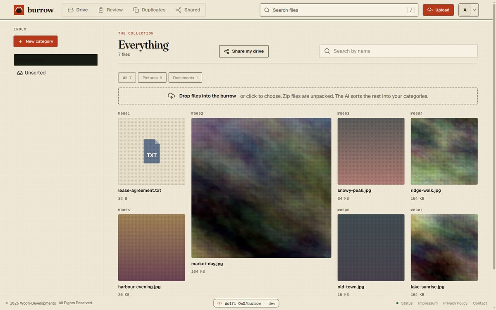
Paper, 1440px. Tabs, search and upload in one bar; specimen numbers above each plate." loading="lazy">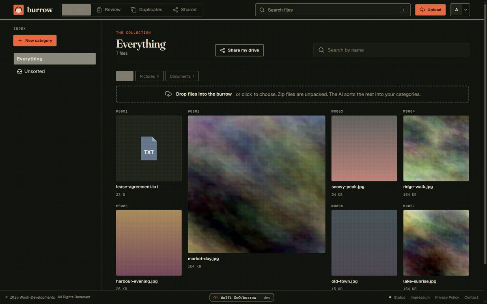
Night olive, 1440px. Same composition, vermilion lifted to stay at contrast." loading="lazy">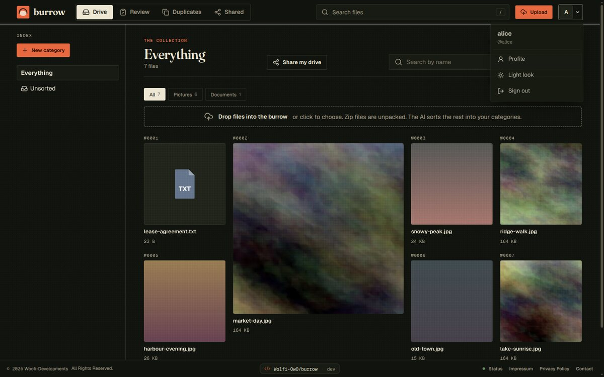
Account menu, open. Profile, light or dark look, sign out." loading="lazy">The sorter’s confidence is the largest thing on each row, because it is the number the decision hangs on.
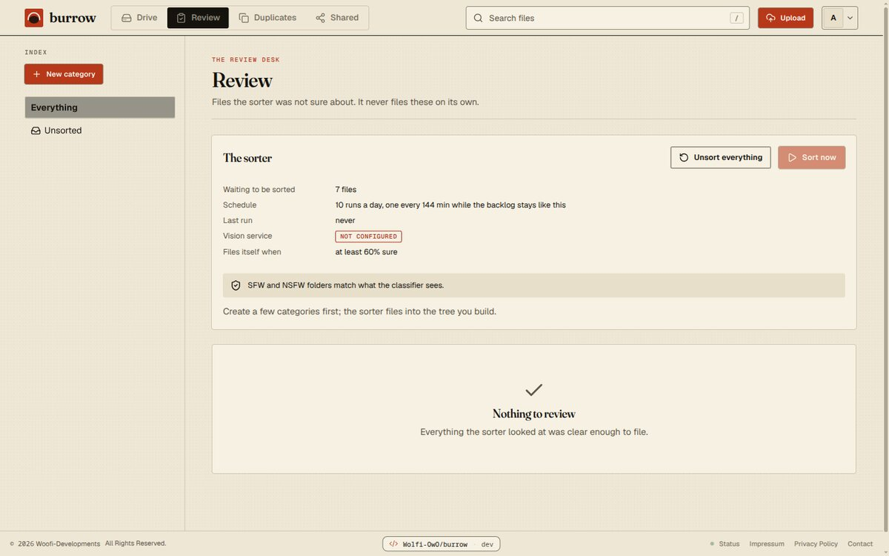
Paper, 1440px. Status block and the empty state when nothing needs review." loading="lazy">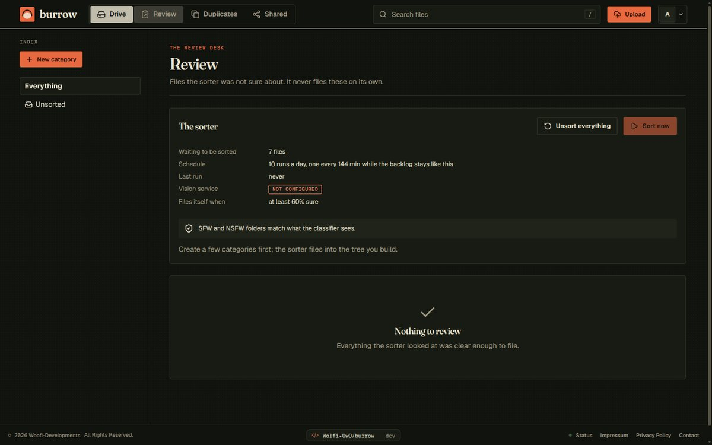
Night olive, 1440px." loading="lazy">Between 880 and 1180px the inactive tabs shrink to icons. Below 880px the tabs become a bottom bar, search becomes an icon that takes the whole top bar when opened, and Upload becomes an icon button. The index opens as a sheet that pushes the page down.
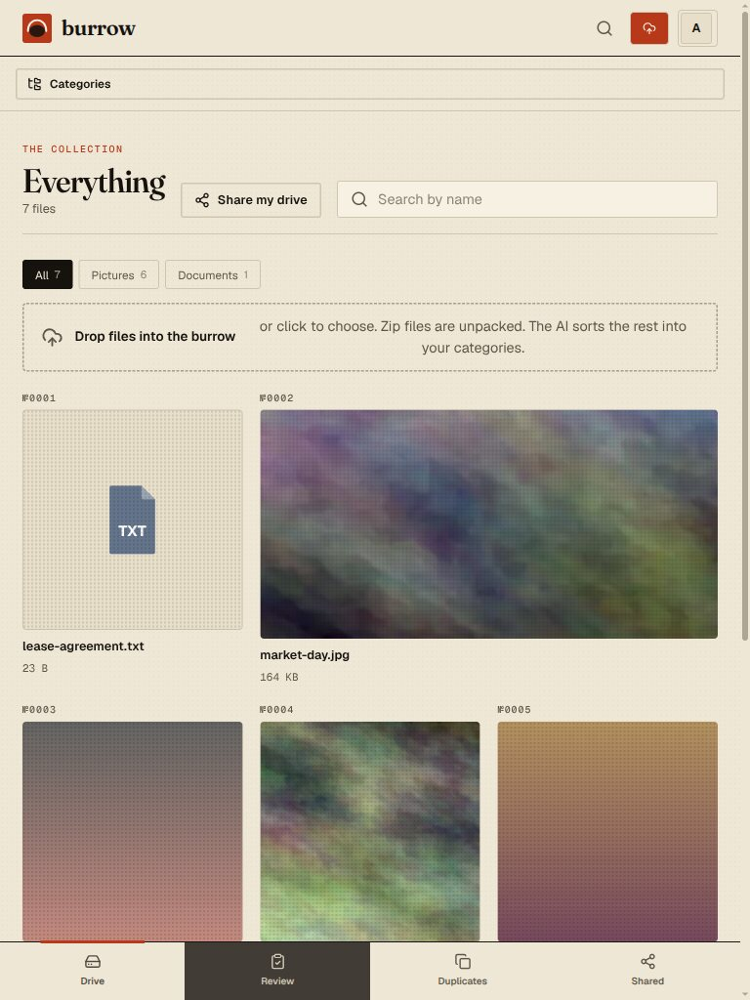
768px, light." loading="lazy">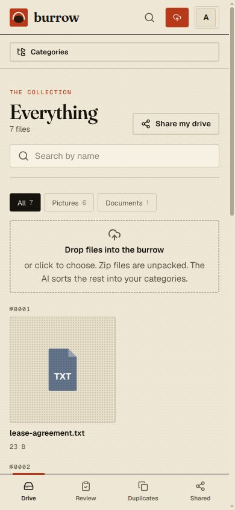
390px, light." loading="lazy">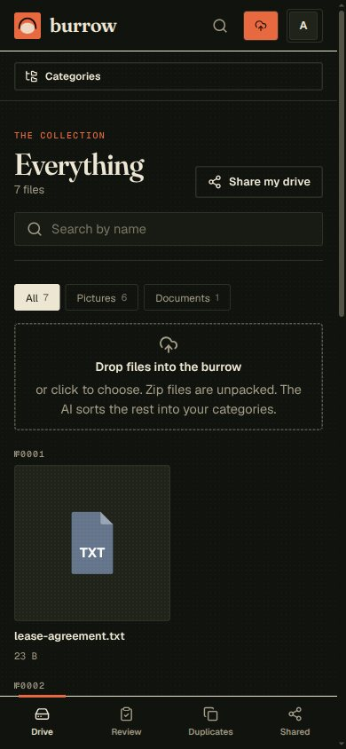
390px, dark." loading="lazy">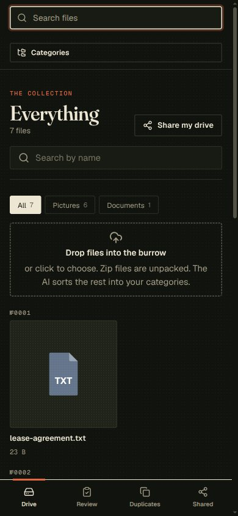
390px, search open." loading="lazy">The burrow cross-section is turned portrait: a sun rises behind the horizon and breathes, one shaft runs down, and three rooms sit in a row. Files slide in and the room they reach lights up. The scene is animated on every screen size.
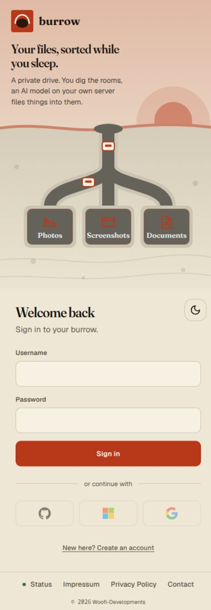
390px, light." loading="lazy">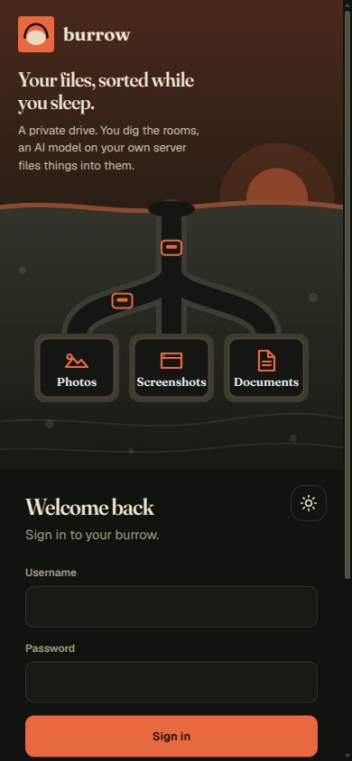
390px, dark." loading="lazy">